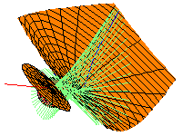

|
Common transversals and tangents to
|
 |
Our approach is to fix two (skew) lines and a quadric, and then describe the common transversals and tangents in this case. For example, the picture above on the left displays the lines transversal to the red line and to a line at infinity, and tangent to the sphere as shown. The curve of tangency is drawn in blue.
Having done that, we then describe which second quadrics have the same set of common transversals and tangents. For example, the picture on the right shows the same sphere, common transversals and tangents, and red line, and it shows a hyperboloid of two sheets tangent to every one of the common transversals and tangent to the sphere. (Here the sphere is hidden in the back of the main figure.)
We study the fascinating geometry behind this in the paper of the same name.
Briefly, fixing the two lines and the first quadric, the space of second
quadrics for which there are infinitely many common transversals and tangents
is a curve in the P9 of quadrics that is remarkable
reducible---it is the union of 12 plane conics!
This page is dedicated to providing computer algebra scripts used to prove
these results and displaying the many (very intriguing) pictures we have
generated of this situation.
Table of Contents
Last modified on 14 July 2002 by Frank Sottile